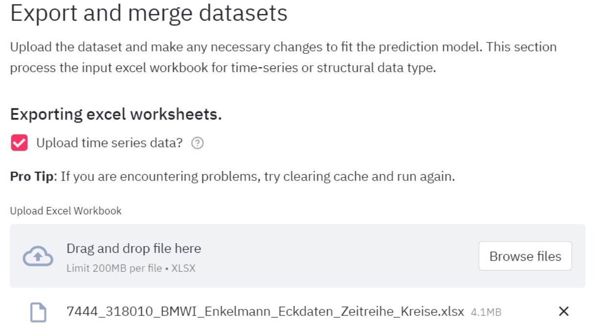
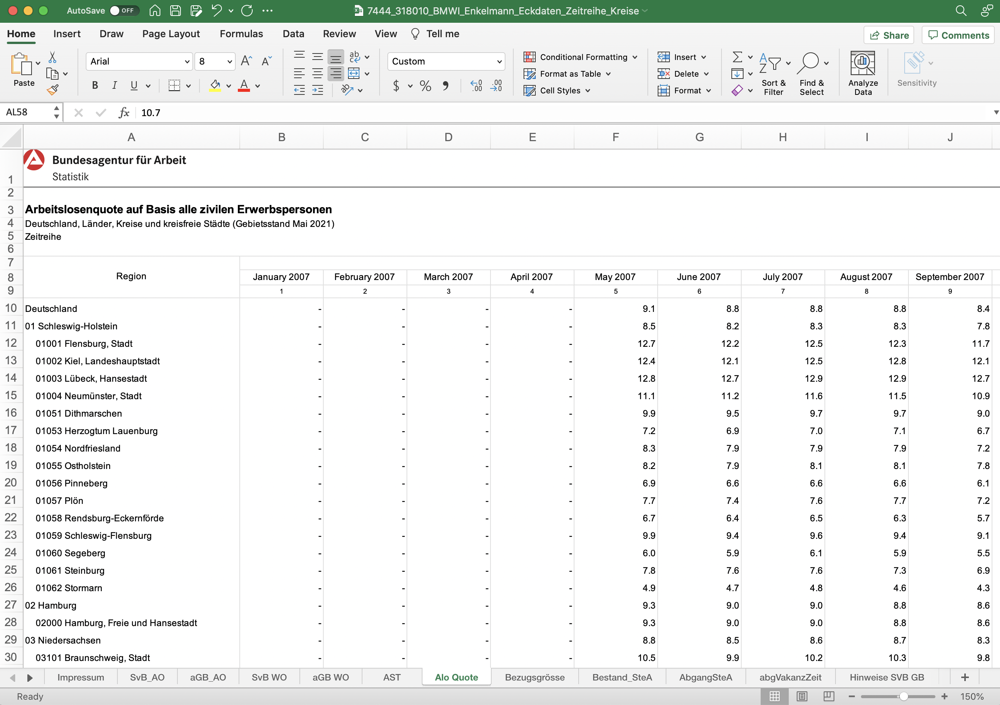
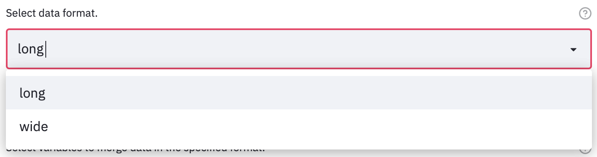
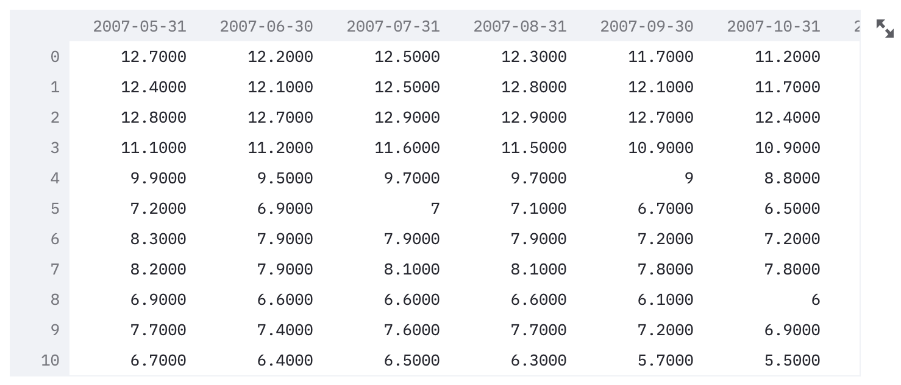
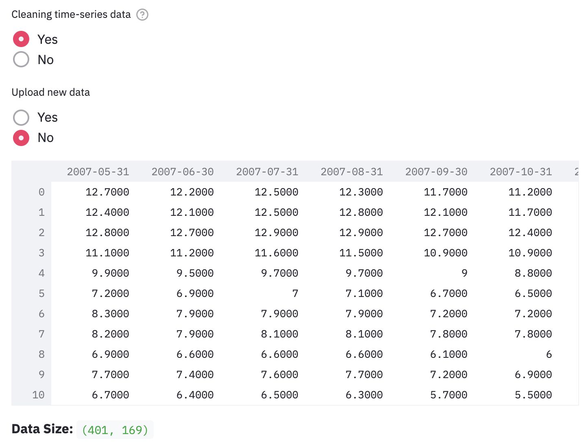
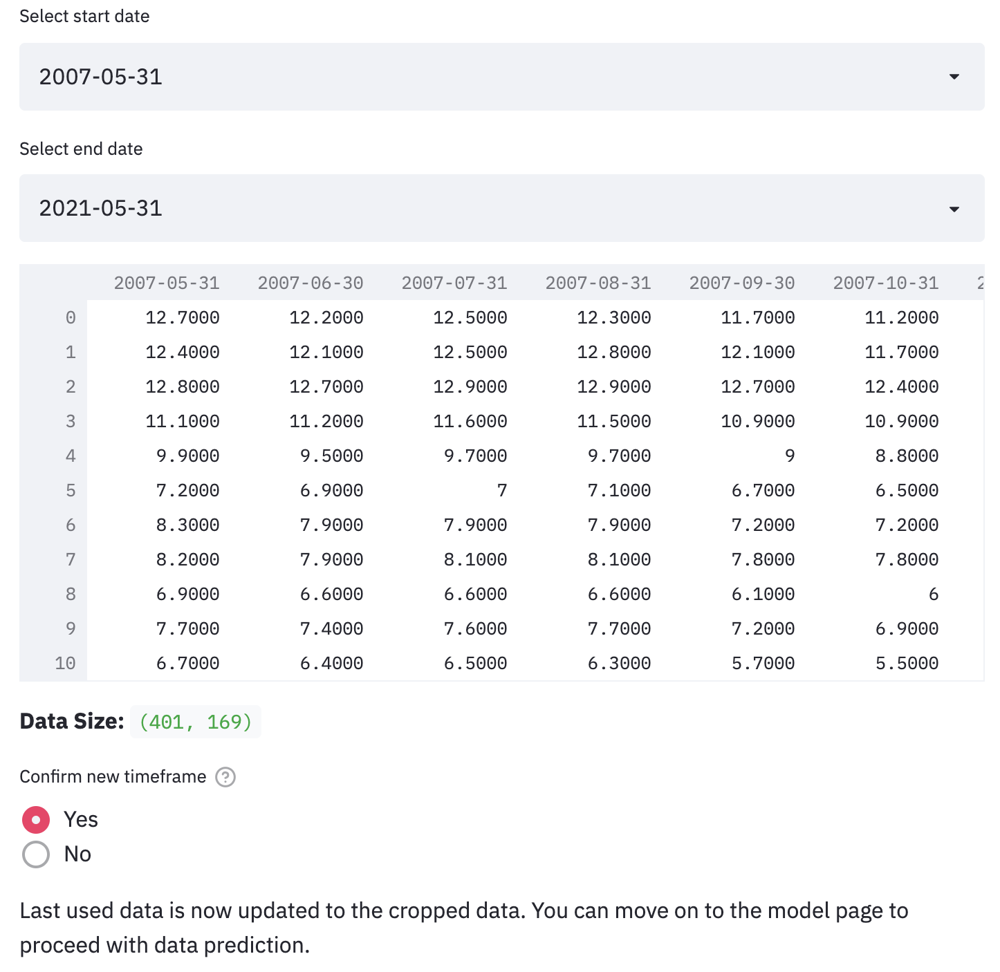

Data Prep
Upload the dataset and make any necessary changes to fit the prediction model. You can find a
This section processes the excel file that is inputted. The excel file must contain time-series data adhering to the following rules:
- data should be in wide-format (the columns are different timestamps, rows are kreise)
- one sheet cannot have more than one variable (e.g., unemployment rate)
- have one column containing the kreis-level area code
ags5("amtlicher gemeindeschlüssel")
Time-series data excel workbook
Upload Excel Workbook

When you confirm that you are using an excel workbook containing time-series data, you are prompted to upload the data. In this sample screenshot, you can see that the file "7444_318010_BMWI_Enkelmann_Eckdaten_Zeitreihe_Kreise.xlsx" is being uploaded.
Select data to clean

This is the assumed workbook for labor market data:
- The index column "Region" shows that each row is a record of one kreis.
- The rest of the columns should represent each year and month.
- Each worksheet represents a different variable. For example, the current worksheet selected is "Alo_Quote", which stands for unemployment rate ("Arbeitslosenquote").
- It is important that there is a sheet which is called "Alo_Quote" which contain the unemployment rate data.
Select variable
The default variable is set to "unemployment rate".
Select data format

Long format
This is an example of a single-variable "long" format data. The dataframe contains three columns: the kreis code (ags5), the time (date), and the variable (e.g. Alo Quote). The number of rows of this file is 401 kreis * #dates for each kreis.
Wide format

This is an example of a single-variable "wide" format data. All the columns in the dataframe are dates. The index of the dataframe is the ags5 code. The number of rows of this file should be 401.
Final dataset cleaning
Data cleaning such as cropping to a certain dataframe, checking for NaN data etc.
Loading dataset

Here, you load the data you would like to clean. By default, it loads the data that you have confirmed processing and merging in the last section.
Cropping timeframe
Pro Tip: The purpose of cropping the appropriate timeframe helps differentiate between a normal-time and crisis-time model. For example, we know that there was the economic crisis around 2008 and the COVID pandemic around 2020. Thus, when doing a normal-time unemployment rate prediction, you could crop out those times so that the model is only learning the pattern from normal-time data.

This is where you can select the timeframe you would like to feed into the model. In this example, a timeframe between 2007-05 and 2007-07 is selected and shown in the preview. Again, once you confirm the dataset, it would be automatically loaded in the model on the next page.